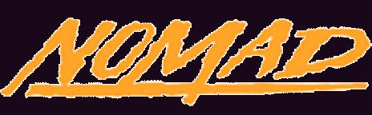
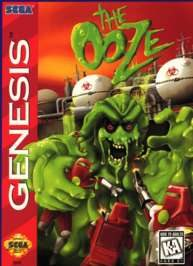

Mega Drive - Conheça o Nomad!
 :::. Por Gigacom - O chodó dos colecionadores, o santo graal dos amantes de Mega Drive, a pitchula do mundo dos portatéis, é ele, ninguem mais ninguem menos que o maravilhoso NOMAD!!! E apesar de todos esses adjetivos tem muita gente que sequer desconfia que esse console exista... E é para essas pobres criaturas que criei esse artigo.
:::. Por Gigacom - O chodó dos colecionadores, o santo graal dos amantes de Mega Drive, a pitchula do mundo dos portatéis, é ele, ninguem mais ninguem menos que o maravilhoso NOMAD!!! E apesar de todos esses adjetivos tem muita gente que sequer desconfia que esse console exista... E é para essas pobres criaturas que criei esse artigo.
_______________________________________________________________________________
O Mega Drive foi um dos consoles de maior sucesso na america, mas sua vida estava no fim em meados de 95-96. Os consoles de 32 bits, muito mais capazes e com outro estilo de jogo (3D) já começavam a abocanhar boa parte da fatia do bolo. A Sega então, para não deixar o sistema morrer, pegou a idéia do CDX, juntou com o Game Gear e assim nasceu o...

Essa é a versão portatil do Mega Drive. A idéia era, já que não dava pro Meguinha sobreviver levando surra de consoles como Saturn e PSX, então melhor levá-lo para outro ambiente onde ele possa bater em alguém (parecido com que alguns pais fazem ao mudar o filho de turma, para que ele deixe de apanhar e bata nos outros moleques menores). E foi o que fizeram, decidiram levar o hardware do Mega para concorrer com o Game Boy, criaram o projeto Vênus e daí nasceu o Nomad.
O Nomad é um devorador de pilhas, pior até que o Game Gear, e não é muito aconselhavél usar pilhas recarregavéis no bichinho (por conta da diferença de voltagem), porém pilhas recarregavéis de alta amperagem, costuma compensar essa deficiência. Quem tem um, costuma dizer que o bicho simplesmente engole aquelas Duracell depois de umas 3 ou 4h de jogatina. Pouco tempo né?
A tela LCD de 3,25" possuia uma resolução nitida, sem o esbranquiçado provocado pelo brilho na telinha do GG. O som é tão potente quanto (pra quem não conhece, o GG é tão barulhento quanto um sindicalista chamando o povo pra greve), e há opção para uso de baterias externas, fonte, adaptador de carro.
Possuindo o hardware de um Mega Drive, o Nomad é compativel com a maioria dos acessórios do Mega. Apesar de existir uma lenda por aí dizendo que não, o 32X, o adaptador para jogos de Master e o Virtua Racing são completamente compativéis. O unico add-on que o Nomad não pega é o Sega CD. Ah, claro, colocar um 32X num Nomad não é das melhores coisas, afinal, um trambolhinho num outro trambolhinho gera um trambolhão. E tambem tem um detalhe: o 32X não encaixa no Nomad, sendo preciso usar algum adaptador como um Game Genie ou aqueles adaptadores de jogos japoneses, para que haja alguma maneira de colocar o 32X nele. Claro que, qualquer movimento poderá fazer com que o jogo apresente algum erro, mas isso é só mais um detalhe.
O controle do Nomad é embutido, e tem as mesmas funções de um joystick de 6 botões, inclusive com aquele botãozinho "Mode". Porém é possível colocar um outro joystick de Mega nele, permitindo com que 2 pessoas (ou até mais usando um multi-tap) possam jogar ao mesmo tempo.
Há tambem uma saída para audio/video igualzinha ao do Mega Drive 3/Genesis 2 na parte superior do aparelho, portanto, se você colocar um cabinho ali poderá jogar na TV numa boa. E tambem há uma entrada para fonte igual ao do Genesis 2/32X/CDX, sendo que uma fonte de qualquer um desses consoles servem para todos eles (são compativeis).
Houve um único jogo exclusivamente projetado para ser usado no Nomad, que foi a o The Ooze. Tem muita gente que odeia esse joguinho, mas eu joguei e até gostei dele, é bonzinho e bem feito, não é nada do tipo "oh minha nossa, que coisa inovadora, que jogo supimpa", mas...
E olhem só que curioso! O jogo X-men simplesmente não pode ser zerado no Nomad. Por que? Explico: quando você chega na ultima fase, aparece uma mensagem dizendo pra você resetar o console para continuar jogando (e o pior que a coisa funciona num Meguinha, o jogo fica completamente alterado depois do reset!) porém... pombas! No Nomad não existe botão de reset!
Um cara de uma feirinha daqui da cidade, conhecido por todos os colecionadores por ter os melhores e mais inflacionados produtos de video games, disse que apenas umas 100 unidades do Nomad foram fabricadas no mundo, e é por isso que se ele conseguir um para vender só o soltará por valores extratosféricos (coisa de uns 3 ou 4 salários minimos). Ainda bem que isso não é verdade, mas tambem não deixa de ser uma mentira... o fato é que poucas unidades foram fabricadas, mas foi coisa de um pouco mais de 1.000.000. Apesar de parecer muito, a maioria ficou lá pelos EUA, e somente alguns milhares é que vieram parar por aqui. Portanto, o Nomad não é um video game considerado raro, porém é de dificil aquisição no Brasil. Fora do país, não é muito complicado conseguir um por um preço rasoavelmente acessível (coisa de $100,00), mas, assim como aqui, lá qualquer colecionador pode dar a sorte de conseguir um desses na caixa, lacrado, e ainda com nota fiscal, em uma vendinha de garagem sem pagar nada por ele (levando como brinde por exemplo). Inicialmente, o Nomad só foi oficialmente comercializado nos EUA; o resto do mundo o conheceu via importação. Porém, no fim de tudo chegaram à conclusão de que seria melhor vender as ultimas unidades em território nipônico. Na minha opnião, a versão japonesa do Nomad é simplesmente a mais dificil de se encontrar...
Como console, é apenas um Mega Drive em uma casquinha portatil, que como o console de origem, proporciona ótima diversão com jogos pra lá de bons. Eu indicaria a compra desse console apenas para colecionadores, mas se você conseguir um por um preço bacana, oras, seja feliz jogando nesse maravilhoso portatil!!!
Acesse o Trombone e comente sobre essa matéria!